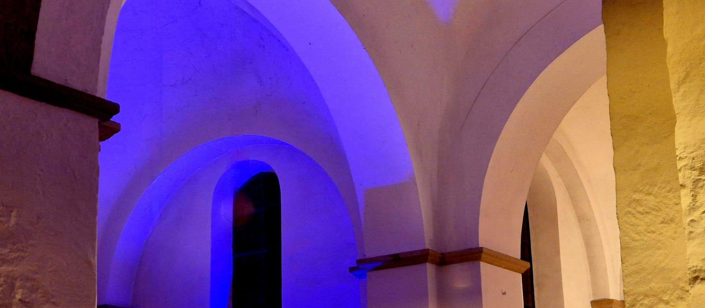
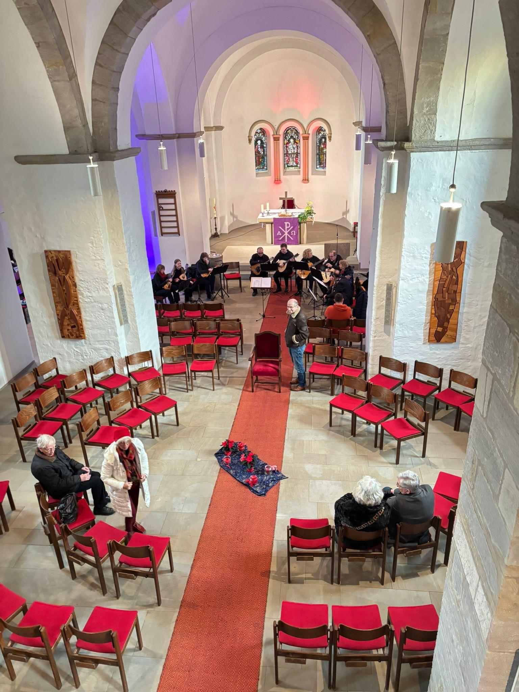
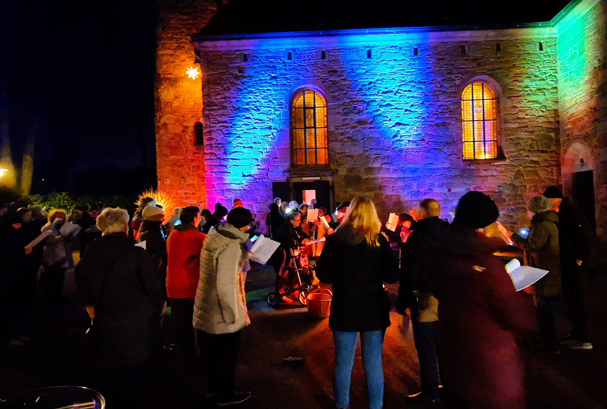
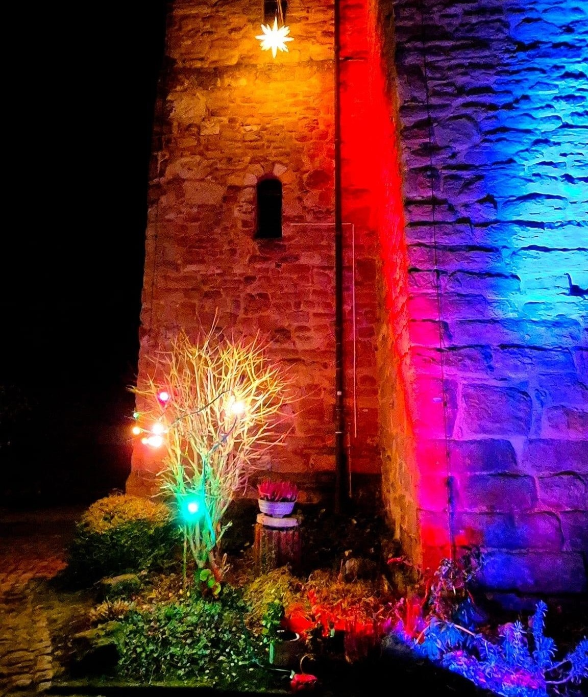

Herzlich willkommen beim Förderverein St. Margareta!
Willkommen auf der Website des Fördervereins Evangelische Kirche Eichlinghofen St. Margareta e.V.
Die St.-Margareta-Kirche und das Haus der Begegnung sind das Herz unseres Dorfes Eichlinghofen.
Seit Jahrzehnten ist dieser Ort ein Treffpunkt für Generationen – unabhängig von Religion, Alter oder Herkunft. Hier finden Hochzeiten, Konzerte, Festlichkeiten und kulturelle Veranstaltungen statt. Hier entsteht Zusammenhalt.
Doch die St.-Margareta-Kirche und das Haus der Begegnung stehen vor existenziellen Herausforderungen. Die Evangelische Kirchengemeinde Dortmund-Südwest kann die Kosten für die Unterhaltung aller ihrer Kirchenstandorte auf Dauer nicht mehr tragen.
Deshalb haben wir den Förderverein gegründet – um unseren Dorfmittelpunkt zu bewahren.
Was wir tun
Unser Förderverein übernimmt die Verantwortung für den Erhalt und die Nutzung der St.-Margareta-Kirche, des Hauses der Begegnung und des Kirchplatzes als lebendigen Ort für:
Werde Teil unserer Mission
Du möchtest Eichlinghofen bewahren?
Mit nur 36 € pro Jahr kannst du Mitglied werden und unseren Verein unterstützen. Wenn du möchtest, kannst du zusätzlich mit einem freiwilligen Förderbeitrag von 120 € pro Jahr (steuerlich absetzbar) einen noch größeren Beitrag leisten.
Über üns
Wer wir sind
Der Förderverein Evangelische Kirche Eichlinghofen St. Margareta e.V. ist ein 2025 gegründeter, gemeinnütziger Verein mit Sitz in Dortmund-Eichlinghofen. Wir sind eine Gruppe von Bürgern, die sich leidenschaftlich für den Erhalt und die Belebung der St.-Margareta-Kirche und des Hauses der Begegnung einsetzen.
Unsere Geschichte
Der Verein entstand aus der Initiative der TaT-Gruppe (Treffpunkt am Turm), einer Gruppe von Bürgern, die sich zum Ziel gesetzt haben, das Kirchenensemble als zentralen Ort für Begegnungen, kulturelle Veranstaltungen und das Dorfleben zu erhalten und weiterzuentwickeln.
Zuvor war unter dem Namen „Neue Energien Eichlinghofen e.V." seit 1998 erfolgreich eine Solaranlage auf dem Dach des Hauses der Begegnung betrieben worden. Mit der Gründung des Fördervereins im Jahr 2025 haben wir unseren Fokus neu ausgerichtet – um unseren Dorf nun ganzheitlich zu unterstützen.
Unsere Ziele
Der Förderverein verfolgt folgende Ziele:- Erhalt und Unterhaltung der Evangelischen St.-Margareta-Kirche, des Hauses der Begegnung und des Kirchplatzes
- Kulturelle Belebung durch Konzerte, Lesungen, Ausstellungen und andere Veranstaltungen
- Soziales Engagement für Jugend- und Familienarbeit, Nachbarschaftshilfe und Gemeinschaftserlebnisse
- Unabhängige Nutzung des Kirchenensembles als Treffpunkt für alle Generationen, unabhängig von Religionszugehörigkeit
- Nachhaltige Energieversorgung durch Betrieb und Pflege der Solaranlage
Unsere Werte
Unser Vorstand
Veranstaltungen
Gemeinsam Eichlinghofen erleben
Die St.-Margareta-Kirche und das Haus der Begegnung sind mehr als nur Gebäude – sie sind Orte der Begegnung, Kultur und Gemeinschaft. Hier finden regelmäßig Veranstaltungen statt, bei denen Dorfbewohner und Gäste zusammenkommen.
Kommende Veranstaltungen
Neujahrsempfang 2026
Wann: Januar/Februar 2026 (Termin wird noch bekannt gegeben)
Wo: Haus der Begegnung
Wir laden Mitglieder, Freunde und Interessierte zu einem gemütlichen Neujahrsempfang ein. Hier können Sie andere Mitglieder kennenlernen, sich über die Arbeit des Vereins austauschen und neue Ideen einbringen.
Eintritt: KostenlosKonzerte und kulturelle Veranstaltungen
Frühling/Sommer 2026
Wir planen eine Serie von Konzerten und kulturellen Veranstaltungen in der St.-Margareta-Kirche. Die genauen Termine und Künstler werden in Kürze bekannt gegeben.
Folgen Sie uns auf Social Media, um keine Veranstaltung zu verpassen!
Sommerfest 2026
Wann: Juni/Juli 2026 (Termin wird noch bekannt gegeben)
Wo: Kirchplatz und Haus der Begegnung
Unser Highlight des Jahres: Ein großes Sommerfest mit Musik, kulinarischen Köstlichkeiten, Spielen für Kinder und Präsentationen lokaler Unternehmen. Ein Tag für die ganze Familie zum Feiern und Zusammensein!
Eintritt: Kostenlos (Getränke und Speisen gegen Gebühr)
Newsletter
Damit du keine Veranstaltung verpasst, melde dich zu unserem kostenlosen Newsletter an:
Du erhältst regelmäßig Informationen über:
- Kommende Veranstaltungen
- Vereinsnachrichten
- Besondere Aktionen und Sonderaktionen
- Instandhaltung und Reparaturen an der Kirche und dem Haus der Begegnung
- Heizung, Strom und Versicherungen für die Gebäude
- Veranstaltungen und kulturelle Programme (Konzerte, Lesungen, etc.)
- Renovierung und Modernisierung der Räume
- Jugend- und Familienarbeit sowie soziale Aktivitäten
- Mitgliedsbeitrag: 36,00 € pro Jahr (3,00 € monatlich)
- Freiwilliger Förderbeitrag: 120,00 € pro Jahr (10,00 € monatlich) – steuerlich absetzbar!
- 10,00 € monatlich = 120,00 € pro Jahr
- 25,00 € monatlich = 300,00 € pro Jahr
- 50,00 € monatlich = 600,00 € pro Jahr
- Bequem: Du musst nicht mehr an jede Überweisung denken
- Flexibel: Du kannst das Mandat jederzeit widerrufen
- Sicher: SEPA-Lastschriften können innerhalb von 8 Wochen zurückgebucht werden
- Transparent: Du behältst volle Kontrolle über dein Konto
- Zuverlässig: Deine Unterstützung kommt regelmäßig an
- 10,00 € monatlich = 120,00 € jährlich (empfohlener Betrag)
- 25,00 € monatlich = 300,00 € jährlich
- 50,00 € monatlich = 600,00 € jährlich
- Oder ein individueller Betrag deiner Wahl
- Einmaliger Einzug im Februar jeden Jahres
- Mindestbetrag: 50,00 €
- Oder ein individueller Betrag deiner Wahl
- Alle Spenden sind steuerlich absetzbar bis zu 20% deiner Einkünfte
- Du erhältst automatisch eine Spendenbescheinigung pro Jahr
- Diese kannst du in deiner Steuererklärung geltend machen und Steuern sparen
- Mitgliedsbeitrag: 600,00 € pro Jahr (50,00 € monatlich)
- Präsentation beim Sommerfest 2026 auf dem Kirchplatz
- Spendenbescheinigung für Steuererklärung
- Öffentliche Anerkennung als Unterstützer der Dorfgemeinschaft
- Nutzungsmöglichkeiten der Räume für Veranstaltungen (nach Absprache)
- F: Wie wird meine Spende verwendet?
- A: Der Förderverein legt transparent dar, wie alle Einnahmen verwendet werden. Der Jahresbericht wird jährlich veröffentlicht und allen Mitgliedern zur Verfügung gestellt.
- F: Kann ich eine Spende zweckgebunden für ein bestimmtes Projekt tätigen?
- A: Ja! Kontaktiere uns und teile mit, wofür du spenden möchtest (z.B. Dachreparatur, Kircheninnenausstattung). Gerne werden solche Projekte realisiert.
- F: Bekomme ich automatisch eine Spendenbescheinigung?
- A: Ja, ab einer Spende von 5,00 € erhältst du am Jahresende automatisch eine Sammelbestätigung. Für größere Spenden stellen wir sofort eine Bescheinigung aus.
- F: Kann ich anonym spenden?
- A: Ja, gerne. Kontaktiere uns einfach und teile mit, dass du anonym spenden möchtest.
Spenden
Unterstütze den Erhalt unseres Dorfzentrums
Die Finanzierung des Fördervereins beruht auf Mitgliedsbeiträgen und freiwilligen Spenden. Jeder Euro hilft, die St.-Margareta-Kirche, das Haus der Begegnung und den Kirchplatz zu erhalten und zu beleben.
Wofür brauchen wir Spenden?
Die Mittel werden verwendet für:
Wie kannst du spenden?
Mitgliedschaft + freiwilliger FörderbeitragBeide Beträge zusammen = 156,00 € pro Jahr für maximale Unterstützung.
Einzelspenden
Du möchtest eine einmalige Spende leisten? Gerne!
Spendenkonto:
Förderverein Evangelische Kirche Eichlinghofen St. Margareta e.V.
IBAN: DE89430609671359732800
BIC: GENODEM1GLS
Verwendungszweck: „Spende St. Margareta"
Dauerauftrag
Mit einem regelmäßigen Dauerauftrag hilfst du uns besonders bei der langfristigen Planung:
Beispiele:
SEPA-Lastschriftverfahren
Bequem und sicher spenden per Lastschrift. Mit einem SEPA-Lastschriftmandat kannst du deine Spenden und Mitgliedsbeiträge automatisch abbuchen lassen – bequem, sicher und ohne dass du an Überweisungen denken musst.
Vorteile des SEPA-Lastschriftverfahrens:
SEPA-Lastschriftmandat für Mitgliedsbeiträge
Als Vereinsmitglied erteilst du uns ein SEPA-Lastschriftmandat, damit wir deinen Jahresbeitrag von 36,00 € automatisch im Februar jeden Jahres einziehen können.
Das Mandat wird gemeinsam mit der Beitrittserklärung ausgefüllt.
SEPA-Lastschriftmandat für freiwillige Förderbeiträge (Spenden)
Du möchtest den Verein zusätzlich mit einem freiwilligen Förderbeitrag unterstützen? Mit einem separaten SEPA-Mandat können wir folgende Beträge automatisch einziehen:
Monatliche Förderbeiträge:
Jährliche Förderbeiträge:
Wichtig: Für freiwillige Förderbeiträge erhältst du eine Spendenbescheinigung, die du steuerlich geltend machen kannst!
Widerruf und Änderung
Du kannst dein SEPA-Lastschriftmandat jederzeit ohne Angabe von Gründen widerrufen oder ändern. Eine formlose E-Mail oder ein Brief an den Vorstand genügt.
Kontakt für SEPA-Mandate:
E-Mail: kassenwart@treffamturm-eichlinghofen.de
Spendenbescheinigung
Der Förderverein ist als gemeinnützig anerkannt. Das bedeutet:
Corporate Social Responsibility für Unternehmen
Du bist Unternehmer/in oder Geschäftsführer/in? Unterstütze den Förderverein als förderndes Mitglied:
Häufig gestellte Fragen (FAQ)
Kontakt
Hast du Fragen zu Spenden oder möchtest dich anders engagieren? Wir freuen uns auf deine Nachricht!



